Just a location.
Search for a town or postcode. Open the forecast and radar without owning a weather station.
STORMDESK 4.12.1 · FREE & OPEN SOURCE
Your weather desk. Arranged your way.
Make room for the weather you follow. Customize desk brings five coordinated looks, twenty theme choices and movable navigation, header items, gauges and weather panels to each screen. Sky Theater brings the forecast to life, Weather Changes shows what comes next, and full HookEcho radar, astronomy and station history stay close by.
Start with a location. A weather station is optional.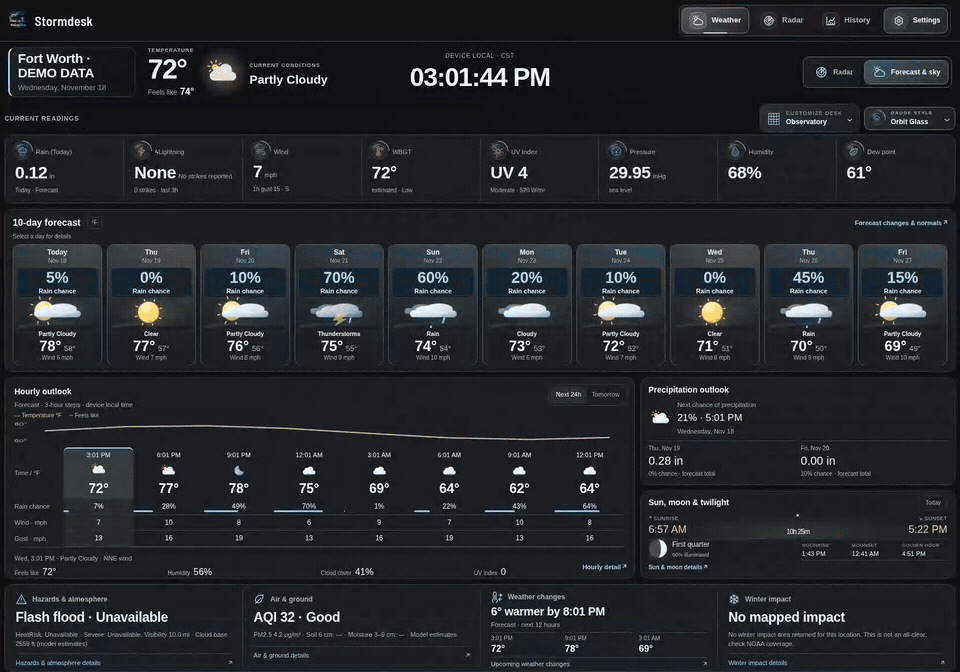
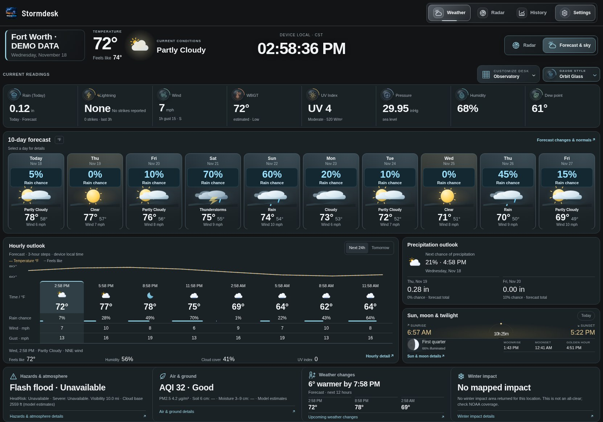
STORMDESK IN 30 SECONDS
See how to choose a desk look, move gauges and menus, change themes, and explore the full HookEcho radar viewer in thirty seconds.
StormDesk 4.12.1 · interface captured November 18, 2026. Demo readings and recorded HookEcho radar are illustrative, not current weather. AI-generated narration.
Your weather. Your desk. Meet StormDesk. Open Customize desk, and make it your own.
Move gauges. Rearrange menus. Put your favorite panels exactly where you want them.
Choose from twenty themes and five animated gauge styles. Explore your station readings, ten-day forecast, and full HookEcho radar.
Make it yours at My Storm Desk dot com.
MAKE ROOM FOR YOUR WEATHER
Open Customize desk beside Gauge style. Start with one of five coordinated looks, then put navigation, headers, gauges and weather panels where they work best for you. Choose from twenty themes and keep an independent gauge style. Each screen remembers its arrangement.
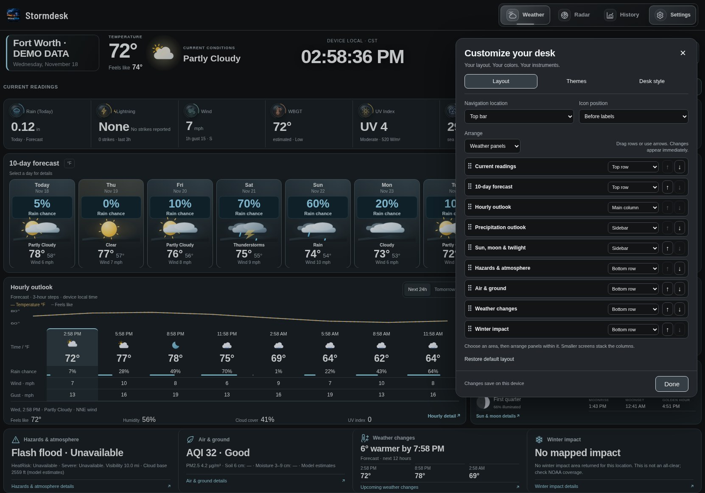
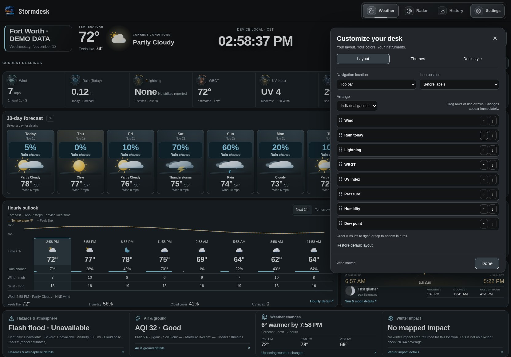
See five coordinated desk looks ↗ · See all twenty theme choices ↗ · Local screen preferences · Default layout can be restored
YOUR SCREEN, YOUR STYLE
Open Customize desk beside Gauge style to choose a coordinated desk look, arrange your navigation, header, gauges and weather panels, and choose icon placement. Keep an independent gauge style or match it to your desk. All five animated gauge styles are included, and each screen remembers its choices. These previews show all eight gauges; motion follows your accessibility settings.
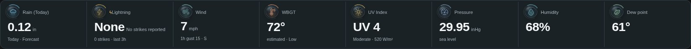
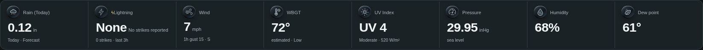
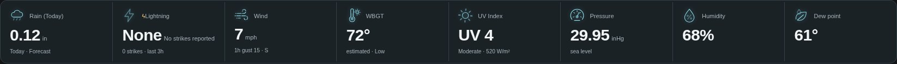
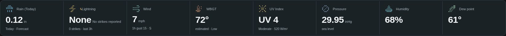
Graphite Silver is the default palette. All twenty theme choices, including light, high-contrast and e-ink options, are available in Customize desk and Settings → Appearance.
These are themes inside StormDesk, separate from this website’s color switcher. Choose one in Customize desk or Settings → Appearance → Theme. Graphite Silver remains the default; saved preferences are preserved.
App-theme captures: StormDesk 4.12.1 · demo weather · November 18, 2026. See the Appearance settings ↗
THREE WAYS TO START
Start with what you have. Add the rest whenever you need it.
Search for a town or postcode. Open the forecast and radar without owning a weather station.
Connect a supported source. Install a host to collect readings and build your own local archive.
Connect to a running household host. Each screen keeps its own display preferences.
SETTINGS, SIMPLIFIED
Six clear cards put everyday choices within reach. Search for a setting, choose a category, and open specialist tools only when you need them.
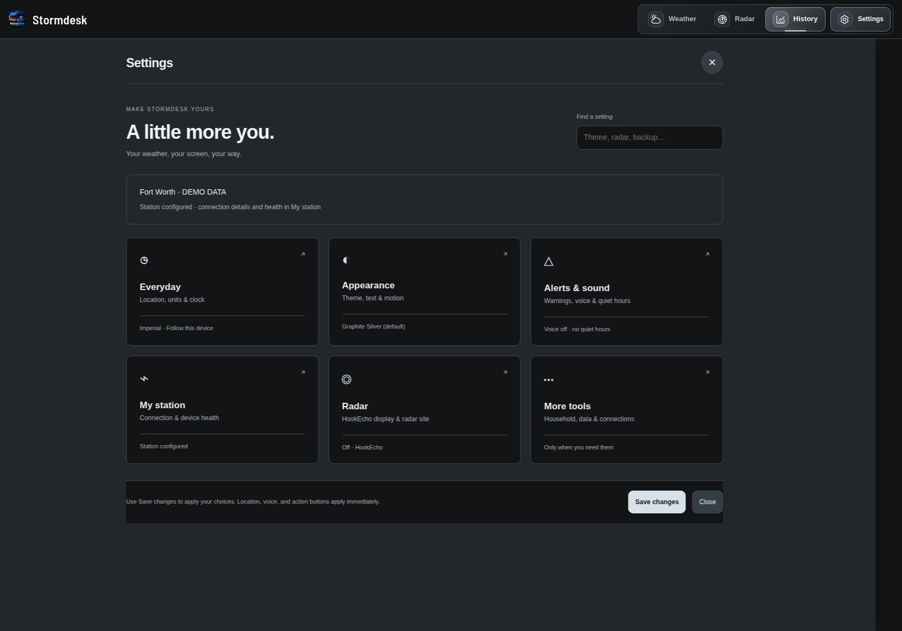
05 / FOLLOW THE SIGNAL
A quick glance before heading out. A closer look when a storm rolls in. Explore the tools that turn readings into useful context.
Give the HookEcho map the screen. Official warnings and emergencies stay visible in a clear bottom banner.
Recorded HookEcho KFWS radar near Fort Worth, captured November 18, 2026 around 2:58 PM CST; separate from the demo readings and not current weather.
Radar powered by HookEcho.io ↗
Explore severe-weather tools →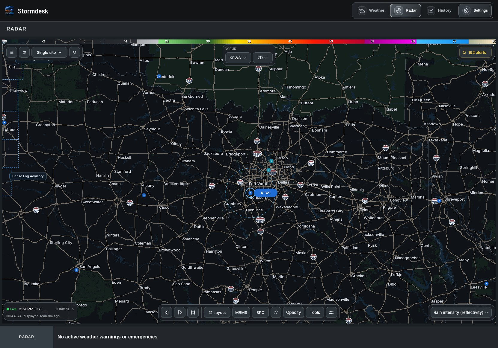
Sky Theater adds condition-aware day and night scenes to up to ten forecast cards. Weather Changes highlights upcoming temperature, gust and cloud-cover shifts from the hourly forecast. Source coverage, saved forecasts and missing values remain explicit.
Start with four measurement snapshots. On your installed host, explore charts and records, import CSV readings, add notes, review exclusions, and print monthly or annual reports.
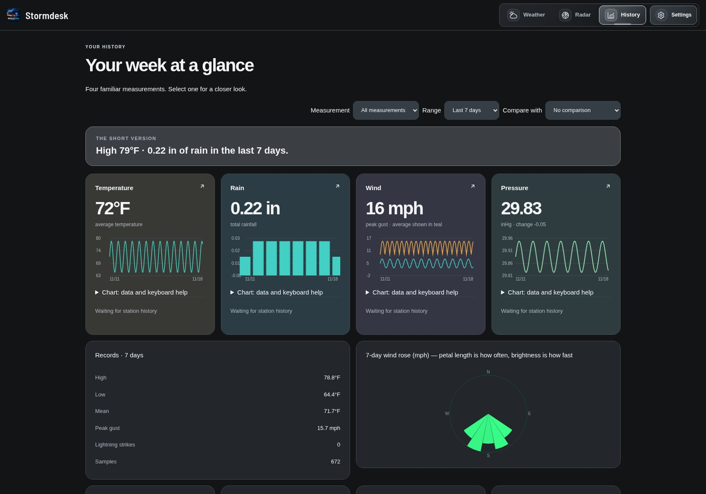
06 / BUILT TO CONNECT
StormDesk connects directly or through the tools your station already supports. Start with a forecast anywhere in the world, then add station readings when you are ready.
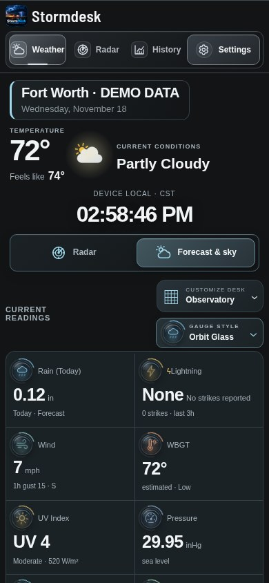
07 / EVERY SCREEN
Run StormDesk on a computer, then view the same household weather on phones, tablets, laptops, and wall displays. Each screen keeps its own theme and display preferences. Rain, Lightning, Wind, WBGT, UV Index, Pressure, Humidity, and Dew point form the default gauge order. Rearrange them in Customize desk; each screen keeps its own order as the layout adapts.
Don’t own a station? Search for a place and use StormDesk as a worldwide forecast dashboard.
08 / FREE AND OPEN SOURCE
StormDesk is free under the MIT license. There are no StormDesk accounts, advertisements, or subscription tiers. Your station archive stays on the host you control.
StormDesk 4.12.1 combines a customizable weather desk, Sky Theater forecasts, Weather Changes, astronomy, five gauge styles and the full HookEcho radar viewer. Run it on Windows, macOS, Linux, Raspberry Pi, Android, or in the browser.
Read the source, report a problem, or contribute improvements through the public GitHub repository.
The website has no analytics scripts, and StormDesk does not require a product account.
09 / GOOD TO KNOW
No. Choose “Find my weather,” search for your town or postcode, and StormDesk will use worldwide forecast data.
Yes. A running StormDesk host can serve your household devices. Presentation settings stay local to each screen.
Returning to the same address preserves that browser’s settings. Moving from stormdesk.pages.dev to app.mystormdesk.com creates a new browser origin, so you will need to set up or pair that address once.
Start with the setup and troubleshooting guide. If the answer is not there, open an issue on GitHub.
Charcoal and amber.